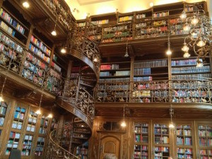

Welche ist die schönste Bibliothek Münchens?!
June 14, 2013In letzter Zeit war ich einige Male (bisher sind es nur 3x) in der Bibliothek zum Arbeiten. Nein nein, ich bin schon noch bei mgm technology partners angestellt, und habe dort auch noch mein Büro – sogar ein sehr schönes. Aber gelegentlich muss ich längere Dokumente schreiben. Oder ich habe Termine in der Stadt, bin mit dem Fahrrad unterwegs, und möchte nicht für eine Stunde zu mgm und dann wieder nach hause fahren.
Da kommen die Bibliotheken ins Spiel. Zunächst einmal sind Bibliotheken schön (viele). Und um konzentriert zu Arbeiten, ist das Telefonverbot extrem hilfreich. Und es ist einfach eine nette Abwechslung zum Büro. Deswegen siche ich die schönste Bibliothek Münchens. Was man schön findet ist Geschmacksache. Aber vieles spielt rein: Wie sieht sie aus, wie sind die Tische, wie ist das Arbeiten mit dem Notebook, was kann man alles mit hinein nehmen… Euer persönlicher Geschmack zählt.
Hier nehme ich mal die Bibliotheken auf, die ich schon besucht habe. Und wenn Ihr mir schönen Bibs vorstellt, freue ich mich, sie zu erkunden.
- Deutsches Museum: Mein aktueller Favorit: Große Tische zum Arbeiten, schöne Räumlichkeiten, meistens gut Platz.Juristische Bib, LMU: Da scheint es wohl mehrere zu geben. Die eine, in der ich war, war alles andere als schön. Da hatte ich mehr erwartet von den Juristen…
- Juristische Bib im Rathaus, Stadtbibliothek: OK, die Juristen können doch Bibliothek! Diese Bib ist eine Schmuckstück! Die Lage ist zentral, die Atmosphäre arbeitsam. Der Zugang ist OKish (Schließfächer vor der Bib, Notebook darf rein, Notebook-Tasche nicht). nett: Es gibt hier ein WLAN-Zugang!

Juristische Bib im Rathaus - Mathematisches Institut der LMU: Die Bücher dort sind schön (Mathe-Bücher halt…). Die Bib war schon abgegrabbelt als ich noch studiert habe, und seitdem haben sie nichts renoviert oder repariert glaube ich. - StaBi, Staatsbibliothek: Groß, ganz nett, schöne Tische, schöner Raum. Etwas anonym.
Außer Konkurrenz sind folgende Bibs:
- Mathe Institut der TUM, Garching: Moderat schön, aber ultimativ gut was die Benutzung angeht: Man geht mit seiner Tasche rein, packt sein Notebook aus, die Tische haben Stromversorgung…
- Nationale Technische Bibliothek, Prag: Die schönste Bib, in der ich je war. Sehr modern, toll zum Arbeiten. Vielleicht etwas groß und voll…
Was sind Eure Favoriten? Lasst es mich wissen, ich bin neugierig.
LG, Till.